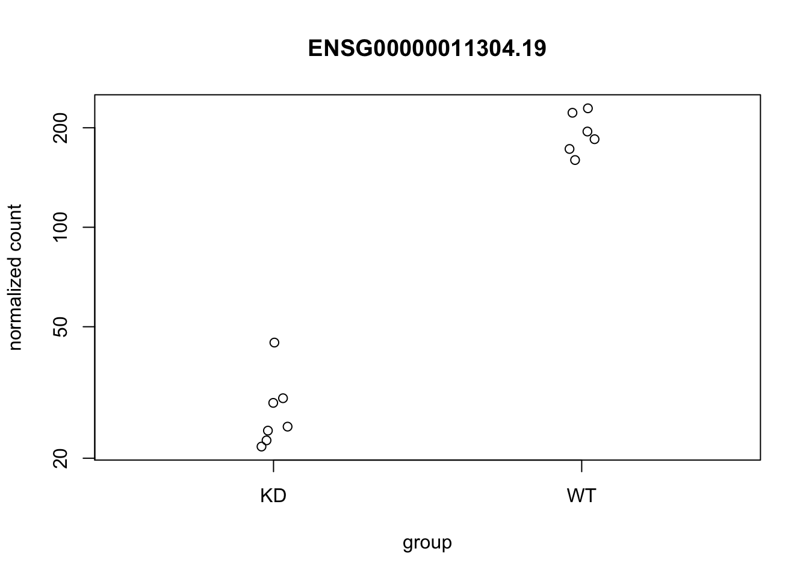
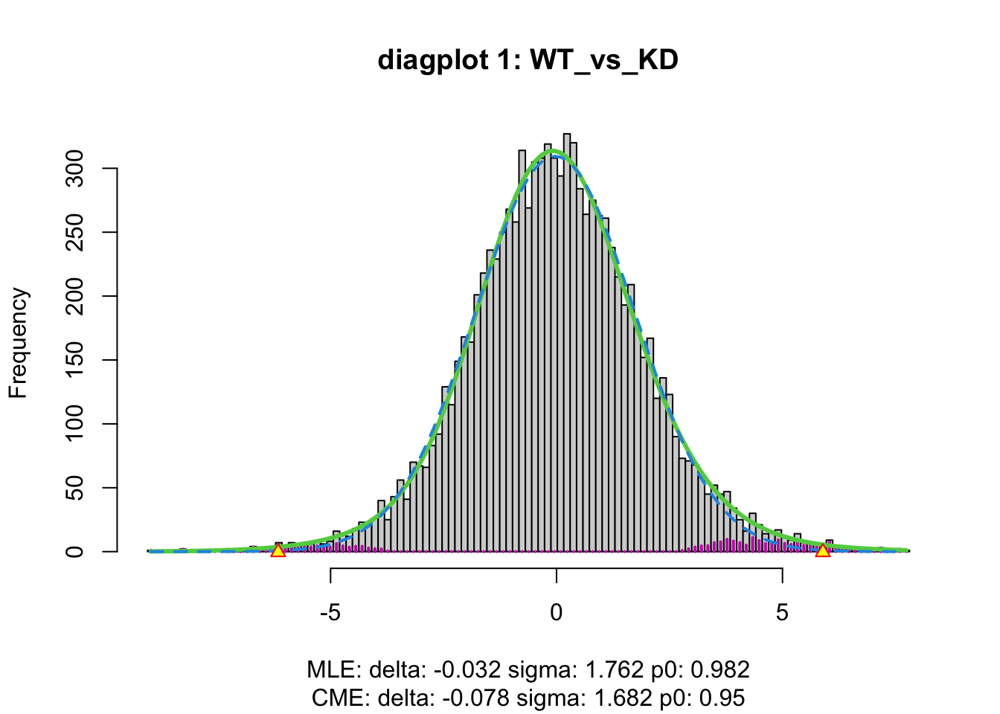
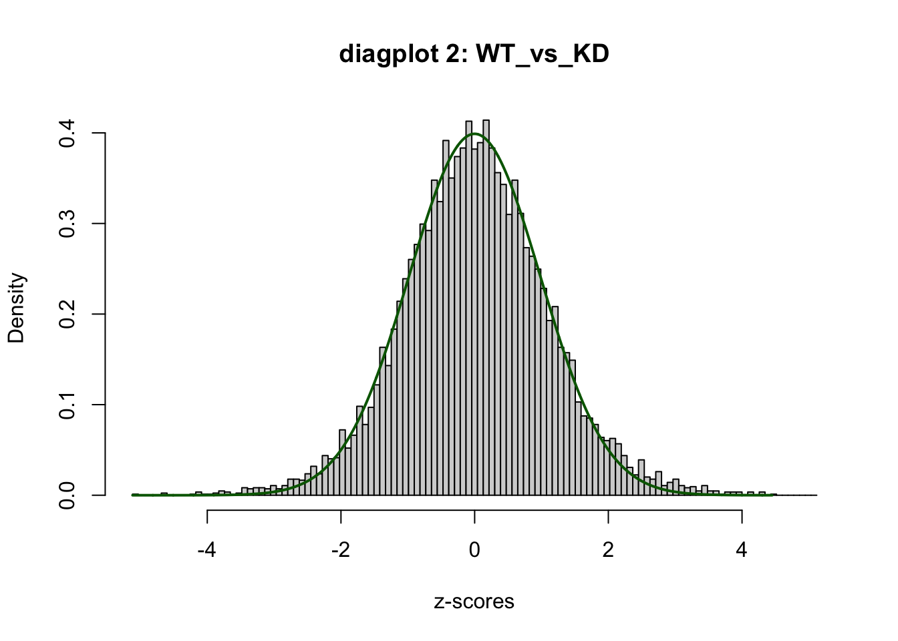

library(here)
# https://drive.google.com/file/d/1ATHgwFlIMmI651C5TYtiBxm2atTvbBYn/view?usp=sharing
# counts
url <- "https://drive.google.com/uc?export=download&id=1ATHgwFlIMmI651C5TYtiBxm2atTvbBYn"
filename <- "quantification_flair_filter.counts.txt.gz"
path <- here("data", filename)
if (!file.exists(path)) {
download.file(url, path)
}
# GTF
url <- "https://drive.google.com/uc?export=download&id=1S0TRXoXsfnXwJ0Dh5bLqVmyvFAAALFMU"
filename <- "flair_filter_transcripts.gtf.gz"
path <- here("data", filename)
if (!file.exists(path)) {
download.file(url, path)
}
# metadata
url <- "https://drive.google.com/uc?export=download&id=1LpYPXXhMtUV3vMG7SMLV69-JxZfc59o2"
filename <- "glinos_metadata.csv"
path <- here("data", filename)
if (!file.exists(path)) {
download.file(url, path)
}3 Statistical testing
In this chapter we show differential gene expression (DGE) using DESeq2 and differential transcript usage (DTU) using satuRn.
Most of the code here involves preparing the R objects for the methods. This is a bit complicated because we are importing data from files that were associated with a paper. I (Mike) would like to instead quantify this data with oarfish (with a current GENCODE + some novel transcripts) so we can demonstrate how easy it is to import with tximeta and use in R/Bioconductor pipelines. For now there are a lot of chunks that deal with data import manually.
Downloading Glinos et al. dataset (GTEx, PTBP1 knockdown)
Assembling the object manually from downloaded files.
library(readr)
library(dplyr)
library(stringr)
counts <- read_delim(here("data", "quantification_flair_filter.counts.txt.gz"))
meta <- read_delim(here("data", "glinos_metadata.csv"))
colnames(meta)[10] <- "total_reads"
meta <- meta |>
mutate(condition = str_extract(sample_id, "(ctrl|exp)")) |>
select(sample_id, sample_name, condition, contains("read") | contains("3_prime")) |>
arrange(condition, sample_name)
rnames <- counts$transcript
counts <- as.matrix(counts[,meta$sample_id]) # subset to the knockdown
rownames(counts) <- rnameslibrary(SummarizedExperiment)
se <- SummarizedExperiment(list(counts = counts),
colData = meta)
#saveRDS(se, file=here("data", "glinos_se.rds"))Filtering for count of 10 across 6 or more samples.
library(here)
library(SummarizedExperiment)
se <- readRDS(here("data", "glinos_se.rds"))
keep <- rowSums(assay(se) >= 10) >= 6
table(keep)keep
FALSE TRUE
77437 16193 se <- se[keep,]Manual data processing:
library(DESeq2)
library(tximeta)
colsums <- colSums(assay(se, "counts"))
cpm <- t(t(assay(se, "counts")) / colsums * 1e6)
assay(se, "abundance") <- cpm
# dummy lengths... no correction for length
assay(se, "length", withDimnames=FALSE) <- matrix(1000, nrow=nrow(se), ncol=ncol(se))library(dplyr)
se$condition <- case_when(
se$condition == "ctrl" ~ "WT",
se$condition == "exp" ~ "KD"
)
# note that protein knockdown will be used as reference
# with this choice of factor levels
se$condition <- factor(se$condition, c("KD","WT"))
se$condition [1] WT WT WT WT WT WT KD KD KD KD KD KD KD
Levels: KD WTLoad a TxDb and produce some objects telling us about the transcripts.
library(stringr)
library(GenomicFeatures)
#txdb <- makeTxDbFromGFF(here("data","flair_filter_transcripts.gtf.gz"))
#saveDb(txdb, file=here("data","flair_filter_transcripts.sqlite"))
txdb <- loadDb(here("data","flair_filter_transcripts.sqlite"))
exons <- exonsBy(txdb, by="tx")
txps <- AnnotationDbi::select(txdb, keys(txdb, "TXID"), c("TXNAME","GENEID"), "TXID") |>
tibble::as_tibble() |>
dplyr::mutate(TXID = as.character(TXID))
# better names for exons:
length(exons)[1] 93718all.equal(names(exons), txps$TXID)[1] TRUEtxps <- txps |>
dplyr::mutate(new_name = case_when(
str_detect(TXNAME,"ENST") ~ TXNAME,
TRUE ~ paste0(GENEID, "-", str_sub(TXNAME, 1, 8))
))
names(exons) <- txps$new_name
#saveRDS(exons, file=here("data","glinos_exons.rds"))Summarize to gene level:
# subsetting to only txp/gene with complete metadata
# and renaming to have more legible names
rownames(se) <- str_replace(rownames(se),"_ENSG\\d+\\.\\d+$","")
table(rownames(se) %in% txps$TXNAME) # these appear to be not genes
FALSE TRUE
933 15260 txps <- txps |>
filter(TXNAME %in% rownames(se))
se <- se[txps$TXNAME,]
rownames(se) <- txps$new_name
rowData(se)$isoform_id <- txps$new_name
rowData(se)$gene_id <- txps$GENEID
tx2gene <- rowData(se)[,c("isoform_id","gene_id")]
gse <- summarizeToGene(se, tx2gene = tx2gene, skipRanges=TRUE)summarizing abundancesummarizing countssummarizing length#saveRDS(gse, file=here("data","glinos_gene_counts.rds"))DESeq2 DGE:
dds <- DESeqDataSet(gse, ~condition)converting counts to integer modekeep <- rowSums(counts(dds) >= 10) >= 6
table(keep)keep
TRUE
8780 dds <- DESeq(dds, minRep=Inf)estimating size factorsestimating dispersionsgene-wise dispersion estimatesmean-dispersion relationshipfinal dispersion estimatesfitting model and testingres <- results(dds, cooksCutoff=FALSE)
summary(res)
out of 8780 with nonzero total read count
adjusted p-value < 0.1
LFC > 0 (up) : 1499, 17%
LFC < 0 (down) : 1469, 17%
outliers [1] : 0, 0%
low counts [2] : 0, 0%
(mean count < 7)
[1] see 'cooksCutoff' argument of ?results
[2] see 'independentFiltering' argument of ?resultsAdd gene symbols manually, make a simple plot of PTBP1 (the knocked-down gene).
library(org.Hs.eg.db)gene_anno <- DataFrame(gene_id = str_replace(rownames(dds),"\\.\\d+",""),
baseMean = round(rowData(dds)$baseMean))
gene_anno$symbol <- org.Hs.eg.db |> mapIds(gene_anno$gene_id, "SYMBOL", "ENSEMBL")'select()' returned 1:many mapping between keys and columnsgene_anno$symbol[is.na(gene_anno$symbol)] <- gene_anno$gene_id[is.na(gene_anno$symbol)]
rowData(dds)$symbol <- gene_anno$symbol
idx <- which(rowData(dds)$symbol == "PTBP1")
set.seed(5) # for jittered plots
plotCounts(dds, gene=idx)
PCA plot:
vsd <- vst(dds, blind=FALSE)
plotPCA(vsd)using ntop=500 top features by variance
#saveRDS(dds, file=here("data", "glinos_deseq2_gene.rds"))
#saveRDS(vsd, file=here("data", "glinos_vst_gene.rds"))Make a Glimma report:
library(Glimma)
g <- glimmaMA(
dds,
groups=dds$condition,
anno=gene_anno[,-1],
main="Glinos et al. (2022) - PTBP1 knockdown", # title above left summary plot
transform.counts="cpm",
test="Wald", name="condition_WT_vs_KD",
independentFiltering=FALSE,
cooksCutoff=FALSE
)
htmlwidgets::saveWidget(g, here("data","glinos_ma-plot.html"))Now, let’s look for DTU, first we do some processing of the SummarizedExperiment with plyxp.
library(plyxp)
xp <- se |>
new_plyxp()
xp <- xp |>
mutate(rows(gene = str_replace(gene_id, "\\.\\d+", ""),
symbol = mapIds(org.Hs.eg.db, gene, "SYMBOL", "ENSEMBL"),
symbol = dplyr::case_when(
is.na(symbol) ~ gene,
TRUE ~ symbol
)))
tab <- table(rowData(se)$gene_id)
one_isoform_gene <- names(tab)[ tab == 1 ]
xp <- xp |>
filter(rows(!gene_id %in% one_isoform_gene)) |>
arrange(rows(gene_id))head(table(table(rowData(xp)$gene_id))) # confirm no single isoform genes
2 3 4 5 6 7
1957 780 305 111 73 40 Extract the SE after we are done with plyxp filtering.
se <- se(xp)Run satuRn for DTU, first fit the model:
# 5 seconds
library(satuRn)
se <- satuRn::fitDTU(se, formula=~0 + condition)Below we compare WT (wildtype) to KD (knockdown), which is perhaps the reverse of how one might expect to define the comparison. Typically wildtype or control is used as the reference that the experimental condition is compared to. In this case, we use the knockdown as the reference, as it provides us with log2 fold changes with respect to the activity of the protein. For example, a transcript with a positive coefficient will be more likely to be expressed when the protein is abundant, and a transcript with a negative coefficient will be less likely to be expressed when the protein is abundant. Exons that appear in transcripts with negative coefficients may be down-regulated by the protein.
design <- model.matrix(~0 + condition, colData(se))
colnames(design)[1] "conditionKD" "conditionWT"colnames(design) <- levels(se$condition)
L <- limma::makeContrasts(
WT_vs_KD = WT - KD,
levels = design
)
L # contrast matrix Contrasts
Levels WT_vs_KD
KD -1
WT 1se <- satuRn::testDTU(
object = se,
contrasts = L,
diagplot1 = TRUE,
diagplot2 = TRUE
)

#saveRDS(se, file=here("data","glinos_saturn_dtu.rds"))Extract test results:
sig_res <- rowData(se)[["fitDTUResult_WT_vs_KD"]] |>
tibble::as_tibble() |>
dplyr::bind_cols(as.data.frame(rowData(se)[,1:4])) |>
dplyr::filter(empirical_FDR < .1) |>
dplyr::select(gene_id, isoform_id, symbol, estimates, empirical_pval, empirical_FDR) |>
dplyr::arrange(empirical_pval)
#write.csv(sig_res, file=here("data","glinos_saturn_dtu.csv"), quote=FALSE, row.names=FALSE)
sig_res# A tibble: 61 × 6
gene_id isoform_id symbol estimates empirical_pval empirical_FDR
<chr> <chr> <chr> <dbl> <dbl> <dbl>
1 ENSG00000196923.13 ENST00000355841.6 PDLIM7 5.14 0.000000309 0.00304
2 ENSG00000198467.13 ENST00000378292.7 TPM2 2.93 0.00000324 0.0108
3 ENSG00000138674.16 ENSG00000138674.16-d16d19d1 SEC31A 2.41 0.00000330 0.0108
4 ENSG00000196923.13 ENSG00000196923.13-00a9e7dd PDLIM7 -4.92 0.00000854 0.0210
5 ENSG00000198467.13 ENSG00000198467.13-7a434697 TPM2 -3.27 0.0000170 0.0252
6 ENSG00000161203.13 ENSG00000161203.13-29f67f36 AP2M1 -1.51 0.0000172 0.0252
7 ENSG00000134285.10 ENST00000552878.5-1 FKBP11 -1.98 0.0000179 0.0252
8 ENSG00000134285.10 ENST00000550765.5 FKBP11 1.98 0.0000211 0.0259
9 ENSG00000167460.14 ENST00000300933.8 TPM4 1.35 0.0000325 0.0304
10 ENSG00000161203.13 ENST00000382456.7 AP2M1 1.83 0.0000365 0.0304
# ℹ 51 more rowsAs a demonstration of DTU, look at counts for the top gene:
cpm <- assay(se, "abundance")[rowData(se)$symbol == "PDLIM7",]
rownames(cpm) <- seq_len(nrow(cpm))
colnames(cpm) <- se$condition
round(cpm) WT WT WT WT WT WT KD KD KD KD KD KD KD
1 1 1 1 2 1 0 72 45 37 36 38 35 55
2 1 2 2 2 1 1 295 190 150 146 175 183 236
3 124 105 114 94 104 84 15 9 14 11 9 10 10
4 4 2 4 2 4 1 19 9 15 13 11 12 7
5 7 5 8 10 9 7 8 5 6 4 4 5 5
6 0 0 1 0 2 0 6 7 6 6 5 8 5sessionInfo()R version 4.5.0 (2025-04-11)
Platform: aarch64-apple-darwin20
Running under: macOS Sequoia 15.5
Matrix products: default
BLAS: /Library/Frameworks/R.framework/Versions/4.5-arm64/Resources/lib/libRblas.0.dylib
LAPACK: /Library/Frameworks/R.framework/Versions/4.5-arm64/Resources/lib/libRlapack.dylib; LAPACK version 3.12.1
locale:
[1] en_US.UTF-8/en_US.UTF-8/en_US.UTF-8/C/en_US.UTF-8/en_US.UTF-8
time zone: America/New_York
tzcode source: internal
attached base packages:
[1] stats4 stats graphics grDevices datasets utils methods base
other attached packages:
[1] satuRn_1.16.0 plyxp_1.2.0 org.Hs.eg.db_3.21.0
[4] GenomicFeatures_1.60.0 AnnotationDbi_1.70.0 stringr_1.5.1
[7] dplyr_1.1.4 tximeta_1.26.1 DESeq2_1.48.1
[10] SummarizedExperiment_1.38.0 Biobase_2.68.0 GenomicRanges_1.60.0
[13] GenomeInfoDb_1.44.0 IRanges_2.42.0 S4Vectors_0.46.0
[16] BiocGenerics_0.54.0 generics_0.1.3 MatrixGenerics_1.20.0
[19] matrixStats_1.5.0 here_1.0.1 rmarkdown_2.29
[22] devtools_2.4.5 usethis_3.1.0
loaded via a namespace (and not attached):
[1] RColorBrewer_1.1-3 jsonlite_2.0.0 tximport_1.36.0
[4] magrittr_2.0.3 farver_2.1.2 fs_1.6.6
[7] BiocIO_1.18.0 vctrs_0.6.5 locfdr_1.1-8
[10] memoise_2.0.1 Rsamtools_2.24.0 RCurl_1.98-1.17
[13] htmltools_0.5.8.1 S4Arrays_1.7.2 progress_1.2.3
[16] AnnotationHub_3.16.0 curl_6.2.2 SparseArray_1.8.0
[19] htmlwidgets_1.6.4 httr2_1.1.2 cachem_1.1.0
[22] GenomicAlignments_1.44.0 mime_0.13 lifecycle_1.0.4
[25] pkgconfig_2.0.3 Matrix_1.7-3 R6_2.6.1
[28] fastmap_1.2.0 GenomeInfoDbData_1.2.14 shiny_1.10.0
[31] digest_0.6.37 rprojroot_2.0.4 pkgload_1.4.0
[34] RSQLite_2.3.11 labeling_0.4.3 filelock_1.0.3
[37] httr_1.4.7 abind_1.4-8 compiler_4.5.0
[40] remotes_2.5.0 withr_3.0.2 bit64_4.6.0-1
[43] S7_0.2.0 BiocParallel_1.42.0 DBI_1.2.3
[46] pkgbuild_1.4.7 biomaRt_2.64.0 rappdirs_0.3.3
[49] DelayedArray_0.34.1 sessioninfo_1.2.3 rjson_0.2.23
[52] tools_4.5.0 httpuv_1.6.16 glue_1.8.0
[55] restfulr_0.0.15 promises_1.3.2 grid_4.5.0
[58] gtable_0.3.6 tidyr_1.3.1 ensembldb_2.32.0
[61] hms_1.1.3 utf8_1.2.4 xml2_1.3.8
[64] XVector_0.48.0 BiocVersion_3.21.1 pillar_1.10.2
[67] limma_3.64.1 later_1.4.2 splines_4.5.0
[70] BiocFileCache_2.16.0 lattice_0.22-7 rtracklayer_1.68.0
[73] bit_4.6.0 tidyselect_1.2.1 locfit_1.5-9.12
[76] pbapply_1.7-2 Biostrings_2.76.0 miniUI_0.1.2
[79] knitr_1.50 ProtGenerics_1.40.0 xfun_0.52
[82] statmod_1.5.0 stringi_1.8.7 UCSC.utils_1.4.0
[85] boot_1.3-31 lazyeval_0.2.2 yaml_2.3.10
[88] evaluate_1.0.3 codetools_0.2-20 tibble_3.2.1
[91] BiocManager_1.30.25 cli_3.6.5 xtable_1.8-4
[94] Rcpp_1.0.14 dbplyr_2.5.0 png_0.1-8
[97] XML_3.99-0.18 parallel_4.5.0 ellipsis_0.3.2
[100] ggplot2_3.5.2 blob_1.2.4 prettyunits_1.2.0
[103] profvis_0.4.0 AnnotationFilter_1.32.0 urlchecker_1.0.1
[106] bitops_1.0-9 txdbmaker_1.4.1 scales_1.4.0
[109] purrr_1.0.4 crayon_1.5.3 rlang_1.1.6
[112] KEGGREST_1.48.0